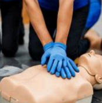
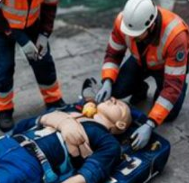

Formamos personas antes de formar protocolos.
Conoce el propósito que guía a nuestro equipo, el respaldo que sostiene nuestro trabajo y la metodología con la que convertimos capacitación en capacidad real de respuesta.
Propósito
Misión y visión
Misión
Formar personas y equipos capaces de responder ante una emergencia con criterio, no solo con reflejo. Brindamos capacitación, equipamiento y cuidado de la salud con estándares que se adaptan a cada sector, cerrando la distancia entre saber qué hacer y poder hacerlo cuando realmente importa.
Visión
Ser el referente nacional en cultura de prevención, presentes en cada sector productivo del país, reconocidos porque nuestras brigadas responden y porque nuestra formación se sostiene mucho después de terminado el curso.
Experiencia comprobable
Nuestro respaldo
Lo que sostiene cada capacitación no es solo teoría: es trayectoria real en el manejo de emergencias.
Experiencia comprobable
Nos avala 20 años de experiencia comprobable en el manejo y control de emergencias.
Trayectoria en el rubro minero
10 años de vida laboral en el rubro minero; experiencia que nos permitió conocer de cerca los riesgos y sus consecuencias.
Formación con estándares internacionales
Nuestra formación nos ha permitido adquirir destrezas y habilidades acordes con estándares internacionales, que direccionan nuestros criterios y metodologías.
Cómo trabajamos
Nuestra metodología de capacitación
Siete pasos que llevan a un equipo desde el diagnóstico inicial hasta la certificación y el seguimiento posterior.
Diagnóstico
Identificamos las necesidades específicas de su empresa y los riesgos a los que está expuesto su personal.
Diseño del programa
Elaboramos un plan de capacitación personalizado según los objetivos, riesgos y normativas aplicables.
Capacitación teórica
Impartimos contenidos actualizados con metodologías participativas y recursos audiovisuales.
Prácticas guiadas
Desarrollamos habilidades mediante prácticas supervisadas con equipos y materiales especializados.

Simulaciones de escenarios
Creamos situaciones reales o simuladas para tomar decisiones acertadas bajo presión y fortalecer competencias.

Evaluación
Evaluamos el desempeño teórico y práctico para asegurar la correcta adquisición de conocimientos y habilidades.
Certificación y seguimiento
Otorgamos certificados de participación y brindamos seguimiento para asegurar la aplicación de lo aprendido.
Diagnóstico
Identificamos las necesidades específicas de su empresa y los riesgos a los que está expuesto su personal.
Diseño del programa
Elaboramos un plan de capacitación personalizado según los objetivos, riesgos y normativas aplicables.
Capacitación teórica
Impartimos contenidos actualizados con metodologías participativas y recursos audiovisuales.
Prácticas guiadas
Desarrollamos habilidades mediante prácticas supervisadas con equipos y materiales especializados.
Simulaciones de escenarios
Creamos situaciones reales o simuladas para tomar decisiones acertadas bajo presión y fortalecer competencias.
Evaluación
Evaluamos el desempeño teórico y práctico para asegurar la correcta adquisición de conocimientos y habilidades.
Certificación y seguimiento
Otorgamos certificados de participación y brindamos seguimiento para asegurar la aplicación de lo aprendido.